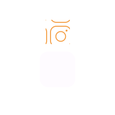
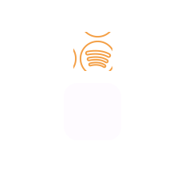

Nós somos o futuro da veterinária.
Desenvolvemos o hoje com o mesmo amor e dedicação que teremos amanhã ao cuidar do seu Pet.


Desenvolvemos o hoje com o mesmo amor e dedicação que teremos amanhã ao cuidar do seu Pet.
Buscamos desenvolver e evoluir as habilidades dos ligantes de uma forma constante e crescente, entendendo que cada um tem suas diferenças e habilidades singulares. Para isso acontecer, todo nosso trabalho é construído nesses três pilares.
No Spotify com nosso podcast
No YouTube com nosso canal
No Instagram mostrando as nossas novidades
No campo científico com os nossos artigos

Um guia prático com as principais informações para que os tutores possam criar o melhor habitat para seus amados pets.
Incentivamos os nossos ligantes na produção de artigos científicos, visando o desenvolvimento não apenas na área social, mas também no campo científico, para estimular dois pontos essenciais.
o desenvolvimento de artigos científicos, ajudam no contato com a profissão de forma mais específica e proporciona a resolução de problemáticas relevantes para a sociedade.
Possibilita o estudante a ter um olhar mais crítico sobre um tema, fazendo-o desenvolver cada vez mais resumos (simples ou expandido) e relatos de caso.
Todas as novidades da Laprocão, estarão diponíveis em nossas redes sociais. Nos acompanhe para ficar por dentro.